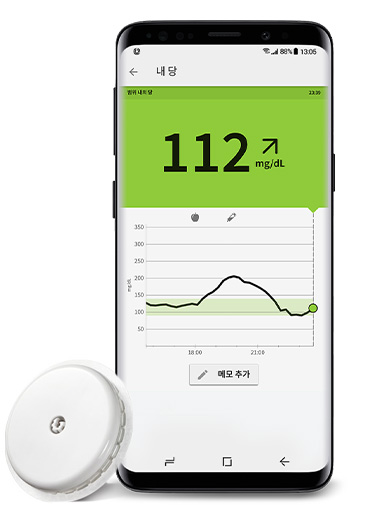

센서 당 수치에
대해 알아볼까요?

프리스타일 리브레 센서는 보정이 완료된 상태로 제조 후 출고되어
편리하게 바로 사용할 수 있습니다.
센서가 자동으로 밤과 낮의 당 수치를 연속적으로 측정하며, 스마트폰에서 다양한 당 수치 분석 보고서 확인이 가능하여 혈당 수치 관리에 도움이 됩니다.
센서가 자동으로 밤과 낮의 당 수치를 연속적으로 측정하며, 스마트폰에서 다양한 당 수치 분석 보고서 확인이 가능하여 혈당 수치 관리에 도움이 됩니다.